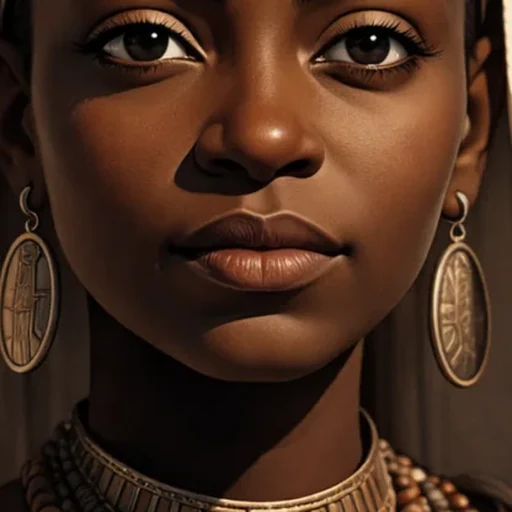

Queen Makeda of Sheba
What makes a ruler powerful—and how do we know which stories about the past we can verify?
Begin the Lesson ↓
Essential Question & Measurable Learning Objectives
Essential question: How can stories about an African ruler teach us about leadership, trade, and identity while helping us distinguish tradition from historical evidence?
By the end of this lesson, learners can:
- Identify and explain at least three roles of trade, diplomacy, or cultural exchange in the Red Sea region using two accurate details from the reading.
- Classify four historical claims as independently supported, traditional, or uncertain, giving a reason for at least three classifications.
- Analyze two contrasting leadership decisions in branching scenarios and justify a preferred decision with at least two criteria.
- Construct an evidence-based paragraph or presentation with one defensible claim, two supporting details, and an acknowledgment of uncertainty.
- Reflect on how historical narratives affect group identity and explain one responsible way to respect different viewpoints.
Success criteria: Meet 4 of 5 targets on the final rubric; answer 4 of 5 post-check items correctly after review. A quiz score alone does not certify achievement of the written objectives.
Standards Alignment · Common Core, Social Studies & SEL
CCSS disciplinary literacy, grades 6–8: RH.6-8.1 (cite textual evidence); RH.6-8.2 (summarize central ideas); RH.6-8.4 (domain vocabulary); RH.6-8.9 (compare primary and secondary sources); WHST.6-8.1 (evidence-based argument); WHST.6-8.9 (use texts as evidence).
Grades 9–10: RH.9-10.1, RH.9-10.6, RH.9-10.9; WHST.9-10.1. Grades 11–12: RH.11-12.1, RH.11-12.7, WHST.11-12.1. Older learners must evaluate source origin, limits, and differing interpretations in greater depth.
Grade 5 bridge: apply grade-level informational reading, evidence-based discussion, and writing expectations; these grade 6–12 disciplinary codes are not assigned as grade-5 standards.
Social studies inquiry: evaluate the credibility of sources; identify trade/cultural networks; examine leadership, power, and the role of historical memory. Civic/SEL connections: ethical decision-making, perspective-taking, respectful disagreement.
These are instructional alignments, not a claim of certification by a state agency. Maryland disciplinary literacy standards · Common Core reference.
Teacher Guide · Pacing, Bloom's Taxonomy, UDL & Assessment
Instructional design: Gradual release (model → guided attempt → independent decision → application), inquiry-based learning, retrieval practice, metacognition, and evidence-centered assessment. Bloom's levels progress through Remember/Understand (diagnostic, vocabulary), Apply/Analyze (source sort, branches), Evaluate (decisions), and Create (final product).
CAST UDL 3.0: Engagement (choice between inquiry paths, identity-connected questions); Representation (chunked reading, vocabulary disclosure, image and text, optional native read-aloud); Action/Expression (written, oral, poster, and map-based output). Avoid assuming any one medium works for every learner.
35-minute path: diagnostic 4, readings 10, one branch 7, exit check 5, claim 9. 50-minute path: diagnostic 5, readings 15, two branches 12, exit 7, synthesis 11. 70-minute path: include source discussion, peer dialogue, extended assessment and a performance task. Adult/advanced learners add corroboration and historiography.
Teacher cues: Ask students to label what is documented versus represented in tradition. Do not assess traditional narratives as proven personal biography. Monitor the use of evidence instead of treating a persuasive personal opinion as historical proof.
Assessments: opening diagnostic = formative, ungraded; reading checkpoints and branching decisions = formative; final five-item check and final claim rubric = summative evidence. Return descriptive feedback; invite revision. For independent study, learners see answer explanations and can retry.
Differentiation: Grade 5–6: read in shorter parts, provide sentence frames and oral responses. Grades 7–8: cite two reading details. Grades 9–12/adults: compare source dates, audiences, and competing interpretations; evaluate evidence limits.
Independent Learner Guide · How to Work Through This Lesson
- Take the diagnostic without worrying about your score.
- Read one short section at a time and open vocabulary definitions when needed.
- Answer the checks and read why the answer works; review and retry whenever necessary.
- Choose a route in each decision scenario; your choices change the discussion, not historical facts.
- Complete the final check and make an evidence-based claim; compare your work to the rubric.
Responses can be saved in this browser using the Save Reflection button. Avoid entering private information, especially on a shared device. For reading support, use your browser/device's built-in read-aloud features.
How Do We Know a Leader's Story?
Imagine two people describing a ruler. One tells an inspiring story passed down for generations. The other shows an inscription dated to the ruler's lifetime. What can each source teach you? What can neither source prove?
Formative assessment · Diagnostic · Bloom: Remember / Understand · Teacher: Do not grade for mastery
Before You Begin · Select all accurate ideas
More than one answer is correct. Choose what you believe, then check your reasoning.
A Connected African and Arabian World
Before modern national borders, people around the Red Sea and Gulf of Aden traded goods and exchanged ideas. South Arabia and the Horn of Africa were not isolated worlds. Goods, technologies, languages and beliefs moved along land and sea routes.
The kingdom of Sabaʾ, often associated with the name Sheba, developed in southern Arabia and participated in regional trade. Archaeology and inscriptions provide evidence for ancient South Arabian kingdoms. African societies across the Red Sea—including communities that later formed the kingdom of Aksum—also developed complex economies and political traditions. Those African kingdoms were not simply extensions of South Arabian rule.
Scholars distinguish the historical evidence for these places and networks from the later traditions identifying a particular queen as Makeda. The exact location and historical identity of the Queen of Sheba remain debated.
Check 1 · Which conclusion best follows from Reading 1?
Trade network
Interconnected routes and relationships through which people exchange goods, information, and ideas.
Archaeology
Study of human history using material remains and their contexts.
Corroborate
Compare independent evidence to evaluate whether it supports a claim.
Diplomacy
Managing relationships and negotiations among leaders or communities.
Who Was Makeda?
Stories about the Queen of Sheba appear in several religious and literary traditions. Biblical accounts describe a queen who visits King Solomon and questions his wisdom. The Qur'an describes a queen and her people in a narrative associated with Solomon, although it does not name her Makeda. Ethiopian royal tradition identifies the queen as Makeda and gives her a central place in stories about dynastic legitimacy.
The Kebra Nagast (“Glory of Kings”), compiled in medieval Ethiopia, became an influential text about Makeda and Solomon. It is important evidence for Ethiopian religious, political and cultural memory, but it is not a contemporary eyewitness record of a queen living many centuries earlier.
We can respect a tradition's meaning without presenting every part of it as archaeologically confirmed. A thoughtful historian asks: Who created this account? When? For what audience? How does it compare with other evidence?
Check 2 · Select two defensible claims.
Watch & Compare · Queen of Sheba in History and Legend
Optional video lecture by scholar Annette Yoshiko Reed for the University of Pennsylvania Museum. This 39-minute exploration traces traditions across Jewish, Christian, Muslim, and Ethiopian communities. Watch selected portions or view the entire lecture. Treat it as a scholarly discussion of stories and historical context, not proof of Makeda's personal biography.
Video loads only when selected. The player is hosted by YouTube, and its availability is controlled by its publisher.
Penn Museum lecture page and details · Watch on YouTube
Suggested Viewing Guide
Use the video alongside the reading. The following are inquiry topics, not verified timestamps:
- Where do the earliest accounts place the Queen of Sheba?
- How did the stories travel among different communities?
- What makes the Ethiopian royal tradition distinctive?
- Which claims are historical evidence, and which are later interpretation?
Source inquiry: How does the scholar distinguish the date of a surviving story from the era the story describes?
Power Beyond the Battlefield
Accounts of Makeda place value on wisdom, questioning, diplomacy, wealth, and long-distance relationships. Whether or not historians can verify particular conversations, these stories offer a way to investigate how communities imagine effective leadership.
Political power can come from armed force, but also from alliances, trade agreements, laws, legitimacy, and the ability to resolve disputes. In civic life today, leaders also face choices between short-term popularity and careful evidence-based decisions.
The story of Makeda also teaches a lesson about perspective. Popular narratives that describe African history solely through enslavement omit the breadth of ancient and medieval African societies. Accurate history recognizes political achievement, learning, creativity, and complexity without treating every celebrated story as an established fact.
Decision Room: A Council Across the Red Sea
Formative assessment · Bloom: Apply / Analyze / Evaluate · Fictional decision scenario inspired by historical trade connections, not an actual documented event in Makeda's life
Imagine you advise a ruler whose merchants travel across the Red Sea. A neighboring port proposes a trade agreement, but neither side fully trusts the other. You must choose how the council responds.
Decision Room: The Museum Label
Formative assessment · Historical thinking · Teacher: Look for source attribution, not memorized answers
A museum displays a modern painted image of Makeda. A visitor asks you to write the caption. Which approach will you choose?
Historian, Civic Leader, or Curator?
Choose one way to demonstrate the same learning target. You may write, record an oral explanation using your own device, create a captioned poster, or draw an annotated exchange diagram. Each option must show evidence and uncertainty clearly.
- Historian: Respond to “What can Makeda's story tell us about African history, and which details remain uncertain?”
- Civic leader: Explain two leadership principles from the story and how you would test them in a modern community decision.
- Museum curator: Create a short exhibit label that identifies the tradition, the documented trade context, and one limit of the evidence.
Required elements for all formats: one clear claim; two accurate details from the readings; one distinction between tradition and independently verified evidence; one thoughtful conclusion.
Self-Check Rubric
Summative performance evidence · Bloom: Evaluate / Create · Teacher: Assess with 6-point rubric; 5–6 strong, 3–4 developing, 0–2 revisit reading. Offer feedback and revision.
Show What You Know
After the readings and decisions, complete this final check. Some questions have more than one correct answer. Read the explanations after each submission and retry to improve. Your answers are not transmitted to a server.
Summative knowledge check · Five items · Auto-scored, immediate formative feedback on retry
1. Which statements are historically defensible?
2. The Kebra Nagast is especially useful for studying…
3. Which actions can reflect political leadership beyond warfare?
4. Which museum caption is most historically responsible?
5. How can a historian treat a traditional account responsibly?
Extend Your Learning
Application · Independent / Small Group / Family · Optional enrichment, not required for completion
- Create a trade network: Use a map or a paper diagram to show how two or three regions might exchange products and ideas. Label which arrows show documented connections and which are hypotheses.
- Visit an exhibition: Find a museum gallery or virtual collection about Ethiopia, Nubia, Aksum, or ancient South Arabia; record one artifact, its date, and what it can and cannot prove.
- Community civics: Interview a trusted adult about a leadership decision. Compare their criteria to the fictional council scenario—without claiming your interview reconstructs the ancient past.
- Research extension: Compare how the Queen of Sheba appears in two different traditions, and explain how audience and date affect the account.
Sources, Context & Historical Limits
This lesson separates three different questions: Was Sabaʾ a historical kingdom? (Yes, supported by evidence.) What did later Ethiopian and other traditions say about the Queen of Sheba? (Several narratives survive.) Can historians reconstruct Makeda's exact life and conversations from these traditions? (Not securely.)
- Encyclopaedia Britannica — Queen of Sheba, overview of the different traditions.
- Encyclopaedia Britannica — Sabaʾ, background on the South Arabian kingdom.
- Kebra Nagast, a medieval Ethiopian royal text. Use with attention to its later compilation and political-religious purposes.
- Common Core history/social studies reading standards, grades 6–8.
- CAST UDL Guidelines 3.0.
- Archaeological evidence — UNESCO World Heritage Centre, Landmarks of the Ancient Kingdom of Saba, Marib. Evidence for Sabaean cities, buildings, irrigation, inscriptions and long-distance exchange; not evidence that Makeda's personal story has been confirmed.
- Material culture and historical method — Smithsonian National Museum of Asian Art, Unearthing Arabia. Archaeological research at the Awam Temple and recorded Sabaean inscriptions.
- Art and Ethiopian cultural memory — Smithsonian National Museum of African Art, Story of the Queen of Sheba. A mid-20th-century painting illustrating Ethiopian traditions; valuable as evidence of representation, not an ancient likeness.
- Scholarly museum lecture — Penn Museum, The Queen of Sheba in History and Legend, Annette Yoshiko Reed (2016). Comparative lecture, approximately 39 minutes; use selected excerpts for students.
- Classroom teaching and comparison — PBS, In Search of Myths & Heroes: Queen of Sheba Teacher Guide. Activities for grades 7–12 examining mythology, geography and historical interpretation.
Artwork is a modern interpretation from Examine the Past's Hall of Legends, not evidence of Makeda's appearance. Scenarios are explicitly fictional teaching simulations. Classroom teachers should review source material for student age and local curricular requirements.